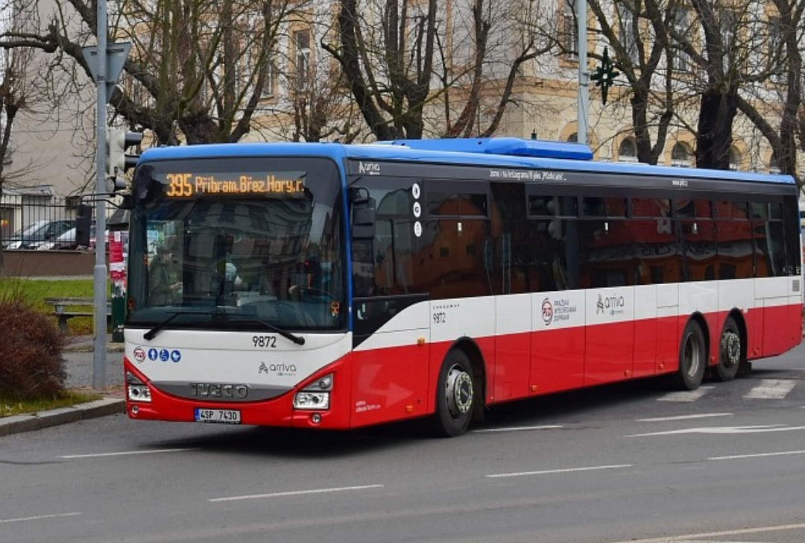

Na autobusové lince 395 z Příbrami nově platí „tichá zóna“ bez výjimek. Dopravce reaguje na opakované stížnosti na nadměrný hluk během jízdy, který měl být nejvýraznější v úseku u Dobříše. Podle nadsázky společnosti míří opatření hlavně na skupiny seniorů, které prý dokážou probírat slevové akce hlasitěji než startující letadlo.
Cestující by se nyní měli držet hlasitosti běžného hovoru, ideálně však šepotu. „Kdo neudrží decibely pod hranicí šepotu, bude vysazen u Voznice bez nároku na odvolání,“ uvádí dopravce. Opatření je zatím zavedeno ve zkušebním režimu a podle reakcí veřejnosti se rozhodne o jeho případném rozšíření.